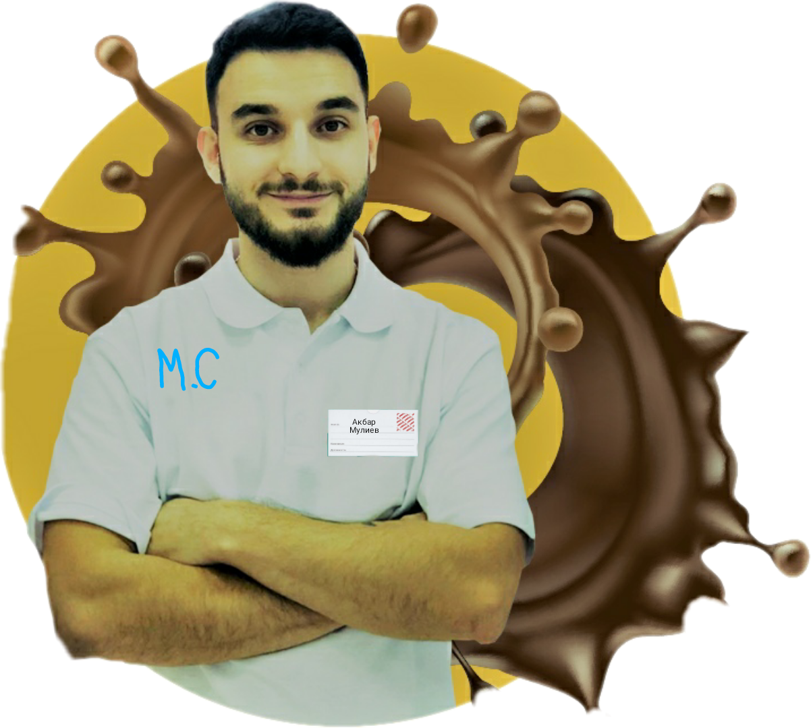

Если хотите стать партнером нашего магазина то эта страничка для ВАС!
Мы создали уникальный по своей концепции магазин, в котором покупатель не просто приобретает товар, он получает положительные эмоции от покупки, потому что сладости это - всегда улыбка, а необычные сладости это - заряд положительным настроением вселенских мастштабов! И как же здорово осозновать, что такую радость, можешь подарить именно ТЫ! Никогда не задумывался о собственном бизнесе? Возможно ты слишком молод или просто привык к стабильности работая на дядю. Но согласись, червячок сомнения гложит тебя, потому что, в глубине души, ты знаешь, что этим все не должно закончиться...И да, ты чертовски прав, хватит уже копашиться в море рутины, начни СВОЁ дело, а франшиза М.С, даст тебе в этом начинании просто космический старт!
Наша история берет свое начало в 16 веке, мы на рынке уже более 5 веков и поставляем сладости и различные вкусности как Королям и Принцессам, так и обычным работягам.
Наше предприятие основал великий кондитер и превосходный лидер - Акбар Мулиев. Он и по сей день возглавляет наш дружный коллектив.
Если тебя заинтересовала возможность поработать в нашей компании, приобрести нашу франшизу или обсудить деловые вопросы оставь заявку в разделе "Контакты" Просто напиши кодовую фразу "ХОЧУ В ДОЛЮ!" Тебе ответят незамедлительно.